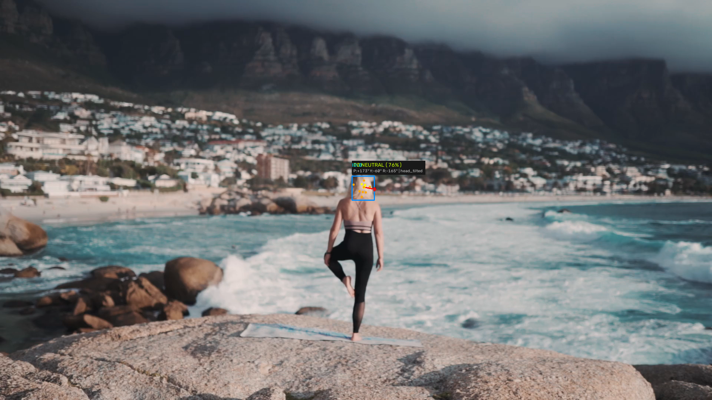

Overview
The Face module solves 3D Perspective-n-Point (solvePnP) head pose estimation to map the face to an exact 3D mathematical plane (Ax + By + Cz + D = 0), extracts facial landmarks, and computes emotion probabilities and expression flags.
3D Plane & Normal
Calculates pitch, yaw, roll angles and projects the face normal vector onto the 2D image plane.
Landmarks
Detects eyes, pupils, eyebrows, nose bridge/tip, mouth corners, lips, and chin contour.
Emotions & Expressions
Measures Eye Aspect Ratio (EAR), Mouth Aspect Ratio (MAR), and smile curvature for emotion detection.
Quick Start
from yolozone import FaceTracker, PoseDetector
import cv2
pose = PoseDetector("yolov8s-pose.pt")
face_tracker = FaceTracker()
cap = cv2.VideoCapture("videos/face-emotion-01.mp4")
while cap.isOpened():
ret, frame = cap.read()
if not ret:
break
kp = pose.find_keypoints(frame)
faces = face_tracker.update(frame, keypoints=kp)
frame = face_tracker.draw_tracks(frame, faces, draw_plane=True, draw_trails=True)
cv2.imshow("Face Plane & Emotion", frame)
if cv2.waitKey(1) & 0xFF == ord('q'):
breakVisual Output
